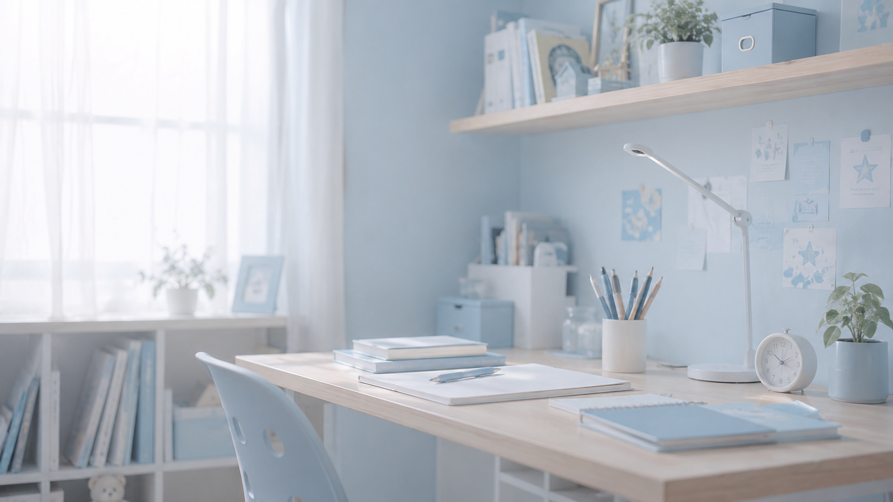

宿題が始められないあなたのトリセツ｜やる気の問題ではなく「始める仕組み」を作る

「宿題やったの？」
毎日何度も声をかけているのに、なかなか机に向かわない。
親から見ると、 「やれば終わるのに」 「どうして先にやらないの？」 と思ってしまうことがあります。
でも、宿題を始められない人の中には、 やる気がないのではなく、最初の一歩を踏み出すことが難しい 場合があります。
なぜ宿題を始めることが難しいの？
ADHD傾向のあるあなたは、 「やることが分かっている」ことと、 「実際に行動を始める」ことの間に大きな壁があることがあります。
例えば、
- 何から始めればいいか迷う
- 宿題の量を見て圧倒される
- 遊びや別のことから切り替えられない
- 失敗しそうで取りかかれない
ということがあります。
「早く宿題しなさい」が逆効果になることも
親としては自然な声かけですが、 「早くして」 「まだやってないの？」 と言われ続けると、 子どもによっては焦りや苦手意識が強くなることがあります。
特に、 「やらなければいけないこと」は分かっている子ほど、 できない自分への嫌な気持ちを抱えていることがあります。
宿題は「始めるハードル」を下げる
① 最初の行動を小さくする
「宿題を全部やる」 ではなく、 最初の一歩だけ決めます。
- 通学バッグを開く
- 宿題を机に出す
- 名前を書く
- 1問だけ解く
始めてしまうと、そのまま続けられることもあります。
② 時間ではなく「きっかけ」を決める
「何時から宿題」 という約束が合う人もいますが、 時間管理が苦手な場合は、 生活の流れとセットにすると分かりやすくなります。
- おやつの後に宿題
- ゲームの前に10分だけ宿題
- 夕食前にプリントだけ確認
③ 終わりを見えるようにする
ゴールが見えない作業は、始めること自体が負担になります。
例えば、
- 「漢字5個だけ」
- 「15分だけ取り組む」
- 「算数プリント1枚だけ」
終わりが分かると取り組みやすくなります。
集中できる環境を作る
宿題への集中は、本人の意志だけではなく環境にも左右されます。
家庭で試せる工夫：
- 机の上を必要な物だけにする
- テレビやゲームの刺激を減らす
- タイマーを使って時間を区切る
- 親が隣で別の作業をする
子ども本人の「じぶんのトリセツ」例
宿題を始めやすくする方法
- 帰宅後すぐより少し休んだ方がいい
- 最初は簡単な問題から始める
- タイマーがあると集中しやすい
- 一人より誰かが近くにいる方が安心する
「できた」を具体的に伝える
宿題が終わった時、
「えらいね」
だけではなく、
- 「自分から机に向かえたね」
- 「最初の1問を始められたね」
- 「昨日より早く取りかかれたね」
のように、行動を具体的に伝えることが大切です。
宿題は「本人の努力」だけで解決しなくていい
宿題を毎日続けることは、 多くの子どもにとって練習が必要なことです。
特にADHD傾向がある場合は、
- 始める工夫
- 続ける工夫
- 忘れない工夫
を環境側に用意することで、負担を減らせます。
まとめ
宿題が始められない時、 「やる気がない」と決めつける前に、
「始めやすい形になっているかな？」
と考えてみることが大切です。
- 最初の一歩を小さくする
- 生活の流れに組み込む
- 終わりを見える化する
- 本人に合う方法を探す
自分に合う方法を知ることが、 「じぶんのトリセツ」作りにつながります。

参考：
文部科学省「特別支援教育について」
発達障害情報・支援センター等の公開情報を参考にしています。
※この記事は診断を行うものではありません。困りごとへの理解や工夫を考えるための情報として掲載しています。